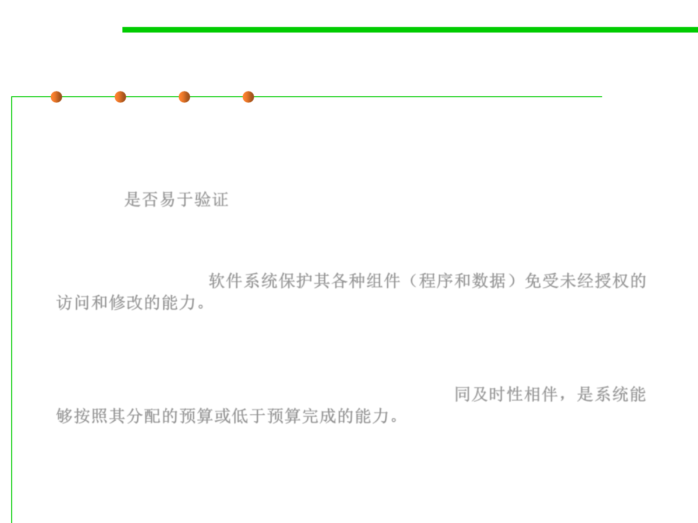

1.2 Quality Objectives of Software Construction
External 10++: Other qualities
▪ Verifiability(可验证性) is the ease of preparing acceptance
procedures, especially test data, and procedures for detecting failures
and tracing them to errors during the validation and operation
phases. 是否易于验证
▪ Integrity(完整性) is the ability of software systems to protect their
various components (programs, data) against unauthorized access
and modification.软件系统保护其各种组件（程序和数据）免受未经授权的
访问和修改的能力。
▪ Repairability is the ability to facilitate the repair of defects.
▪ Economy, the companion of timeliness, is the ability of a system to
be completed on or below its assigned budget.同及时性相伴，是系统能
够按照其分配的预算或低于预算完成的能力。